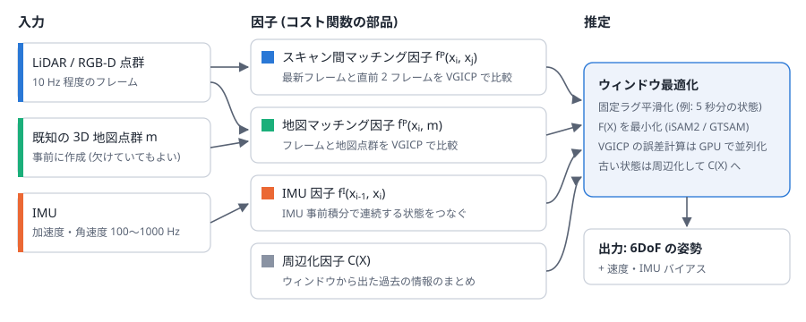
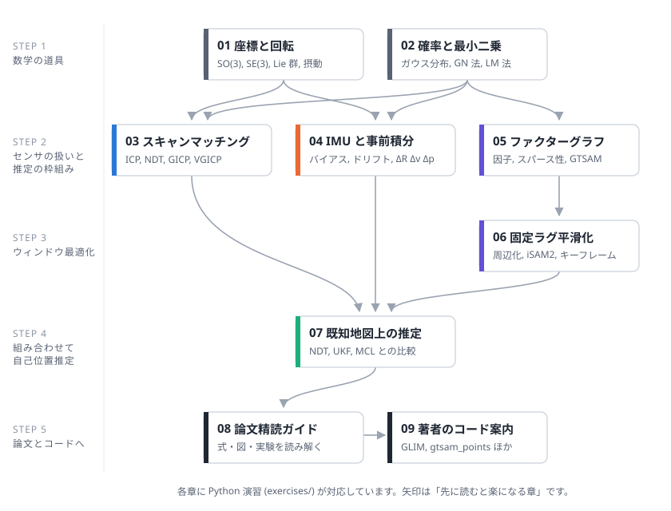

00. 学習ロードマップ
この教材は、次の論文を「自分の言葉で説明できる」ようになることを目標にしています。
点群・IMU 制約のウィンドウ最適化に基づく既知地図上での 6DoF 姿勢推定 小出 健司, 大石 修士, 横塚 将志, 阪野 貴彦 (産業技術総合研究所) ロボティクス・メカトロニクス講演会 2023 (ROBOMECH2023) PDF: https://staff.aist.go.jp/k.koide/assets/pdf/robomech2023.pdf
論文をひとことで言うと
「LiDAR の点群と IMU を使い、既知の 3D 地図の上でロボットの位置と姿勢 (6 自由度) を推定する。 その際、地図とのマッチングだけに頼らず、直前のフレーム同士のマッチングと IMU の情報も 同じ最適化問題に入れて、最近の数秒分の状態をまとめて最適化する」 という手法です。
こうすることで、
- 地図が一部欠けている・環境が地図作成時から変わっている場所でも、 フレーム同士のマッチングと IMU で推定を続けられる
- 地図のある場所に戻れば、地図とのマッチングでドリフト (誤差の蓄積) が打ち消される
という性質が得られます。従来手法 (NDT マッチング、UKF ベースの hdl_localization、 パーティクルフィルタベースの mcl3d_ros) は地図とのマッチングへの依存が大きく、 地図が欠けた領域に入ると推定が破綻した、と報告されています。

論文の目的関数
論文の中心は次のコスト関数です。これを最小にする状態 \(X\) を求めます。
| 記号 | 意味 | 詳しくは |
|---|---|---|
| X | 最適化ウィンドウ内の状態 (例: 最新 5 秒分) | 06 章 |
| x_i | 時刻 i のセンサ状態 (姿勢・速度・IMU バイアス) | 01 章, 04 章 |
| f^P(x_i, x_j) | フレーム i と j の点群マッチングのコスト (VGICP) | 03 章 |
| f^P(x_i, M) | フレーム i と地図点群 M のマッチングのコスト | 03 章, 07 章 |
| f^I(x_{i-1}, x_i) | IMU 事前積分による運動の整合性のコスト | 04 章 |
| C(X) | ウィンドウから外れた過去の情報 (周辺化因子) | 06 章 |
この式の 1 項 1 項が「なぜそういう形なのか」「どうやって計算するのか」を理解するのが、この教材のゴールです。
必要な知識の地図

| 章 | 内容 | 演習 | 目安 |
|---|---|---|---|
| 01 座標と回転 | 回転行列、SO(3)/SE(3)、Lie 群、摂動によるヤコビアン | ex01 | 2〜3 時間 |
| 02 確率と最小二乗 | ガウス分布、マハラノビス距離、ガウス・ニュートン法 | ex02 | 2 時間 |
| 03 スキャンマッチング | ICP、NDT、GICP、VGICP、GPU 化 | ex03, ex04 | 3 時間 |
| 04 IMU と事前積分 | IMU の観測モデル、バイアス、ドリフト、事前積分 | ex05 | 3 時間 |
| 05 ファクターグラフ | 因子・変数、スパース性、GTSAM、iSAM2 | ex06 | 2 時間 |
| 06 固定ラグ平滑化と周辺化 | ウィンドウ最適化、シューア補行列、キーフレーム | ex06, ex07 | 2〜3 時間 |
| 07 既知地図上の自己位置推定 | NDT・UKF・MCL と提案手法の違い | ex07 | 1〜2 時間 |
| 08 論文精読ガイド | 論文を節ごとに読み解く。2D 再現実験 | ex07 | 2 時間 |
| 09 著者のコード案内 | GLIM, gtsam_points, small_gicp などのどこに何があるか | optional | 適宜 |
| 10 用語集 | 日本語・英語の対応表 | - | - |
おすすめの進め方
- まず論文を 1 回ざっと読む。 分からない単語に印をつけるだけで OK です。
- 01 → 07 章を順に読み、各章の演習を実行する。 数式は「何を表しているか」を優先し、 導出は演習のコードで数値的に確かめるくらいで十分です。
- 08 章を見ながら論文をもう一度読む。 1 回目に印をつけた単語がすべて説明できるかチェックします。
- 余裕があれば 09 章を見ながら著者のコード (GLIM) を読む。 論文の式がコードのどこに対応するかを追うと、 理解が一段深まります。
各章の最後にある「理解度チェック」で、説明できるか確認しながら進めてください。
学習を始める前の準備
リポジトリのトップの README に従って Python 環境を作り、次を実行してください。
python exercises/check_env.py
すべての演習は numpy / scipy / matplotlib だけで動きます。ROS や GPU は不要です。
理解度チェック (最終目標)
この教材を終えたとき、次の質問に答えられるようになっているはずです。
- なぜ地図マッチングだけでなく、前後フレームのマッチングもコスト関数に入れるのか?
- IMU 事前積分を使うと、何が効率的になるのか?
- VGICP が GPU と相性が良いのはなぜか?
- ウィンドウから外れた状態をただ捨てずに「周辺化」するのはなぜか?
- フィルタ (UKF・パーティクルフィルタ) とウィンドウ最適化の違いは何か?
- 提案手法が苦手そうな状況はどんなときか?